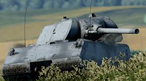

Avantages Canon Rh120 + munitions très pénétrantes sur Leopard 2. Précision et vitesse exceptionnelles. Optiques et thermiques de haut niveau. Véhicules légers (Wiesel, Puma) très performants. Désavantages Blindage faible à l'avant de la caisse sur la plupart des Leopard 2, même tardifs. Pas de vraie solution de "brawler" → chars faits pour la distance. Gamme bas/moyen BR fragile malgré de bons canons.
Les joueurs qui joue principalement l'Allemagne ont la réputation d'être les joueurs les plus handicapés de toute la communauté, car ils sont aveugles, sourds, dénués de toute logique de base et de permanence de l'objet. Toutes ces accusations sont complétement avérées, ils sont nuls.